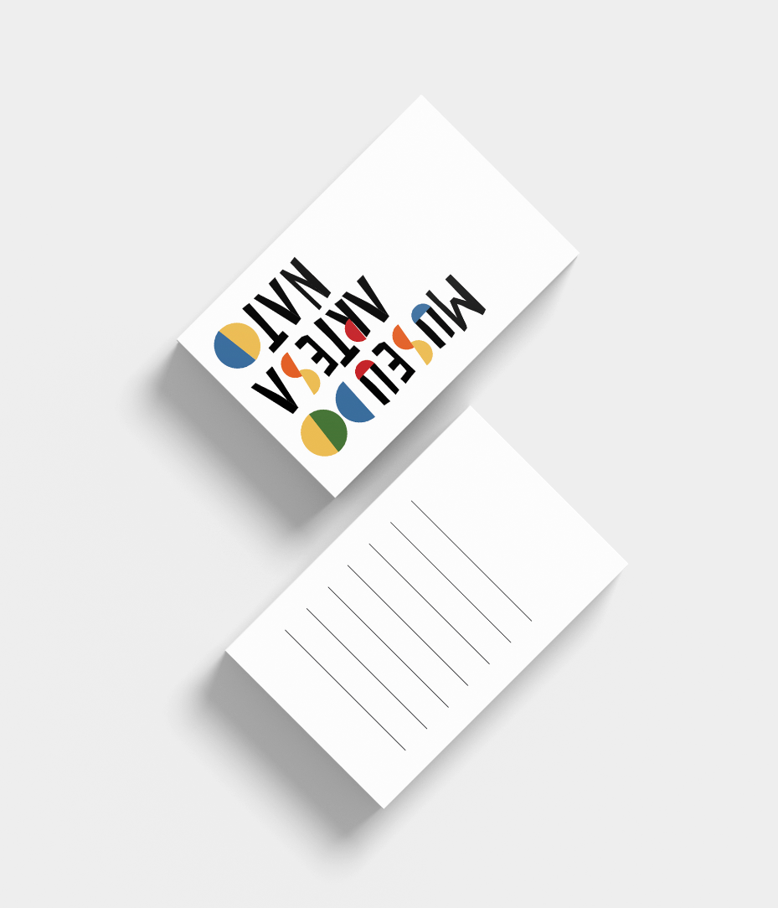
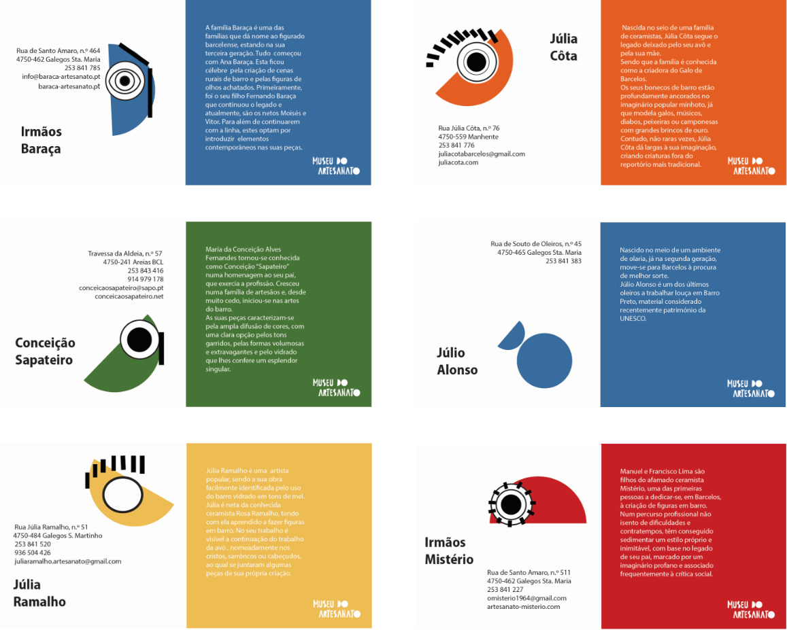
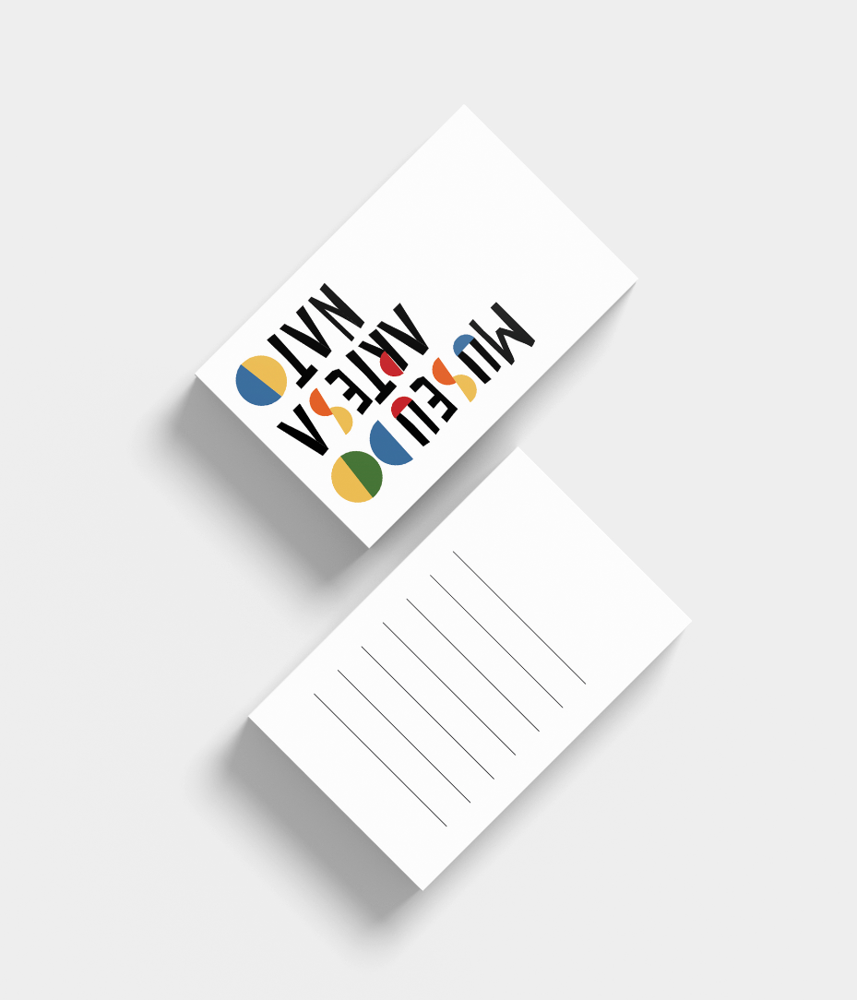
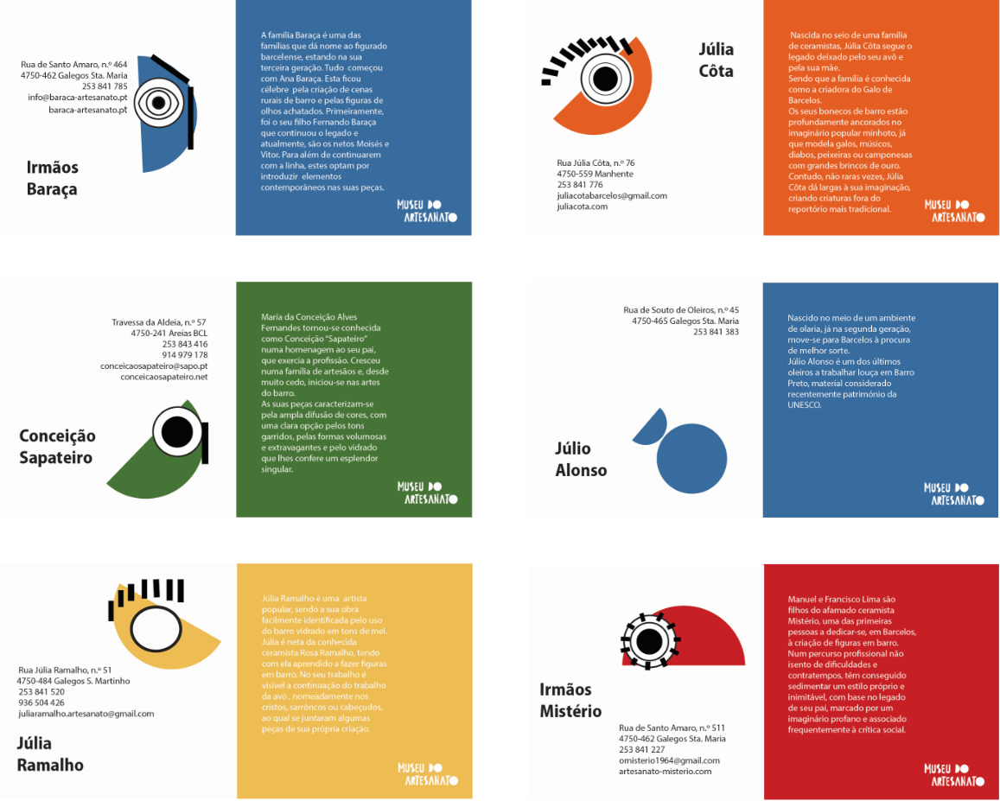
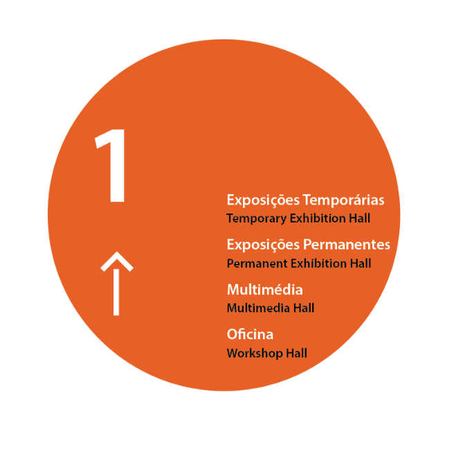
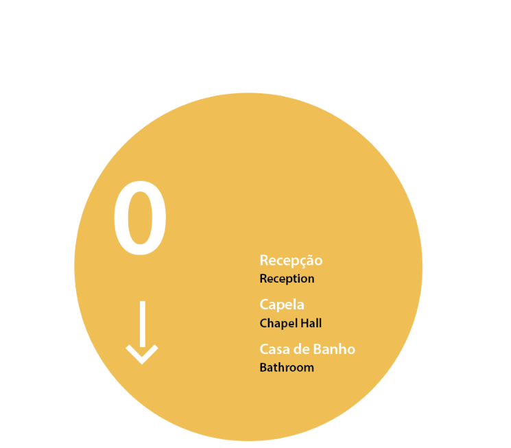
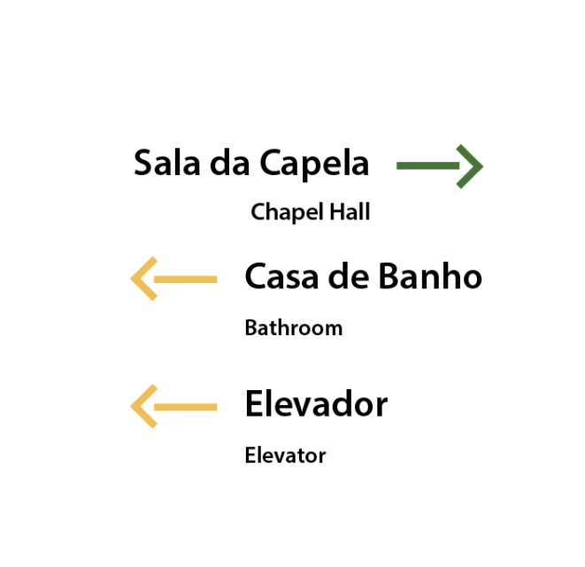
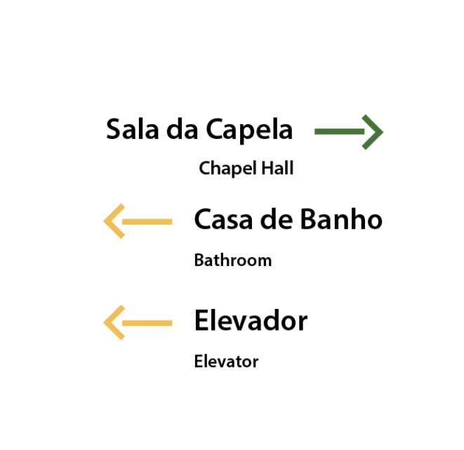

Identidade
Este projeto consistiu na reestruturação da identidade de uma Instituição - O Museu de Olaria. A proposta foi dividida em fases, entre das quais, a pesquisa, referências, o conceito e a elaboração. A primeira fase consistiu em conhecer a instituição e os seus objetivos. Daqui houve o entendimento de que o Museu pretende manter o artesanato Barcelense vivo, assim como o Nacional, através da divulgação do mesmo. Perceber como outras entidades do gênero divulgam e cumprem os seus objetivos é fundamental para termos como referência. Uma fase também ela importante foi o conceito. A pergunta que surgiu para chegar até ele foi: Quais as profissões/ culturas que existem com hábitos idênticos aos que exercem esta profissão? As tribos. Ambos fazem louças para o dia-a-dia e ambos fazem figuras quer para festividades quer para brincadeiras de criança. Unindo tribo à importância que o Museu de Olaria dá ao Artesão, o conceito estava definido. Tribo/Artesão.

Para a elaboração da marca houve a necessidade de conhecer o trabalho de cada artesão Barcelense e dos artesãos em geral e a partir daí desenvolver uma ilustração para cada família. O objetivo foi criar a mesma linguagem para cada ilustração, daí a repetição do círculos, de metade do circulo e um traço. A partir destas formas a marca foi criada.

As cores escolhidas foram influenciadas pelas cores da Olaria e do Figurado. Já o formato manual foi influencidado pela assinatura do artesão na peça de barro. O nome da instituição foi alterado. Artesanato engloba tanto a Olaria (louças) como o Figurado (peças que relatam o quotidiano/ sátiras).
Estacionário


 



{kind=link}
{kind=link}
Sinalética
 {kind=link}
{kind=link}

 

{kind=link}


A placa da Instituição foi desenvolvida para divulgar o Museu, mas também cativar o público alvo. Este meio de comunicação foi desenvolvido para que se possa entrar nele No seu interior encontram-se frases do popular português, porém modificadas para o contexto do Artesanato. "Foram muitos anos a virar galos." "Agora vou pintar o diabo." Frases como esta estariam dentro do edifício para retratar um pouco do dia-a-dia desta rica profissão que é o Artesão.